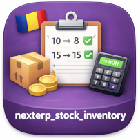

NextERP - Stock Inventory
Stock Inventory
Overview
Add a dedicated stock-inventory document on top of stock.quant so
physical counts are grouped, dated and valued as a single record. The
module introduces two new models — l10n.ro.stock.inventory (the
header) and l10n.ro.stock.inventory.line (the counted lines) — with
a form, list and search view, plus a reporting list / pivot / graph
over the lines.
Each inventory is scoped to a set of internal locations and, optionally,
to a list of products. Generating the lines fetches the corresponding
stock.quant records, snapshots their on-hand quantity and value, and
lets the operator enter the counted quantity. Validating the inventory
applies the differences through stock.quant.action_apply_inventory()
on the chosen accounting date and stores the resulting value
difference per line.
The model also wires the inverse side: when quants are adjusted outside
this workflow (standard Odoo screens, third-party imports), an
l10n.ro.stock.inventory is created automatically, grouped by
accounting date, so every stock adjustment ends up captured in a
traceable document.
Built & supported by NextERP Romania
Romanian Odoo specialists, here for the long run — from implementation to localization and day-to-day production support.
What we do
Features
- Inventory header model —
l10n.ro.stock.inventoryties an accounting date, a company, internal locations and (optionally) a product list to a draft/done state, with an auto-computed name likeInventory - YYYY-MM-DD. - Counted-line model —
l10n.ro.stock.inventory.linecarries the counted quantity, on-hand quantity, difference, standard price, current value, post-validation value and value difference, each line linked to astock.quant. - Quant uniqueness — a Postgres constraint
unique(inventory_id, quant_id)blocks the same quant from appearing twice on the same inventory. - Generate / clear actions —
Generate Inventory Linesfetches quants for the configured locations and products (creates missing quants on the fly),Clear Inventory Linesremoves them and resets the flag. - Validate action —
Validate Inventorycallsstock.quant.action_apply_inventory()on each line with the inventory's accounting date, snapshots the new value, computes the per-line value difference and locks the document. - Reverse capture — the override of
stock.quant.action_apply_inventorycreates onel10n.ro.stock.inventoryper accounting date when quants are adjusted outside this workflow, so manual quant edits are still archived as inventory documents. - Reporting — a list / pivot / graph view on
l10n.ro.stock.inventory.linefilterable by inventory, product, lot, location and accounting date, withquantity,inventory_quantityandinventory_diff_quantityas measures. - Manager-only menus — both menus live under the existing
stock.menu_stock_adjustments/stock.menu_warehouse_reportparents withgroups="stock.group_stock_manager".
Configuration
The module ships with no settings page. All setup is master-data preparation and access-rights checks.
1. Install dependencies
The manifest depends on stock_account, so:
- Inventory must be installed.
- Accounting or another module pulling in
stock_accountmust be installed so quants carry avalueand astandard_pricethat the inventory lines can snapshot.
2. Grant access
The inventory header is editable by base.group_user, but both menu
entries are restricted to stock.group_stock_manager. Go to
Settings → Users & Companies → Users and put the operators who run
inventories in the Inventory: Administrator group. Other users can
view inventories only through their record URL.
Access rights for the two new models (read / write / create / unlink)
are defined in security/ir.model.access.csv for
stock.group_stock_user and stock.group_stock_manager.
3. Prepare locations
Open Inventory → Configuration → Warehouses Management → Locations
and ensure every location that has to be counted is set to Usage:
Internal. The inventory form filters location pickers by
usage == 'internal' and silently ignores all others.
4. Prepare products (optional scoping)
Inventories can be limited to a product list. The form filters the
many2many to products of type consu (which in 19.0 covers storable
and non-storable goods). If no product is selected, all internal
locations of the company are scanned.
5. Multi-company
company_id defaults to self.env.company and is propagated through
related fields on the lines. Each company maintains its own
inventories; quants of another company are not picked up when lines
are generated.
6. Open the menus
After install the new entries are:
- Inventory → Operations → Adjustments → Inventory Stock
Adjustments — the header list and form (action
action_open_stock_inventory). - Inventory → Reporting → Inventory Stock Line Adjustments
History — list / pivot / graph over validated lines (action
action_open_stock_inventory_line_history), filtered tostate = doneby default.
To install this module, you need to:
- clone the branch 19.0 of the repository https://github.com/NextERP-Romania/odoo-community
- add the path to this repository in your configuration (addons-path)
- update the module list
- search for "NextERP - Stock Inventory" in your addons
- install the module
How it works
The flow is built around the l10n.ro.stock.inventory form. A single
record represents one physical inventory: pick a scope, generate the
lines from current stock, count, then validate.
1. Create an inventory
Go to Inventory → Operations → Adjustments → Inventory Stock Adjustments and click New:
- Accounting Date — defaults to today; the date the stock adjustments will be booked on.
- Locations — pick one or more internal locations to count. Leave empty to count every internal location of the company.
- Products — optionally restrict the inventory to a product list; leave empty to count every product on the selected quants.
Save the draft.
2. Generate the lines
Click Generate Inventory Lines. The wizard:
- Searches
stock.quantfor the configured scope. - Skips quants that already have a line on this inventory (the action can be called multiple times while the inventory is in Draft).
- Creates one line per quant, snapshotting On Hand Quantity, Counted Quantity, Difference, Standard Price and Value.
- Sets
inventory_quantity = 0on quants that had no value, so the counter starts from a blank slate.
3. Adjust the count
In the Inventory Lines tab:
- Edit Counted Quantity per line; Difference updates automatically through the related quant.
- Add manual lines for product / location / lot combinations not yet
in stock — the create override on the line model finds the matching
stock.quant(or creates one withinventory_quantity = 0). - Click Clear Inventory Lines to wipe all lines and start over;
the related quants'
inventory_quantityis cleared as well.
4. Validate
Click Validate Inventory. The action:
- Sets the accounting date on each quant.
- Re-reads the final on-hand quantity, value and difference on each line.
- Calls
stock.quant.action_apply_inventory()on the quant, posting the stock-account journal entries. - Captures
inventory_value(post-apply value) andinventory_diff_valueon each line, then locks the document with State = Done.
5. Inverse capture from elsewhere
When users adjust quants directly from Inventory → Operations →
Physical Inventory or via imports, the override on
stock.quant.action_apply_inventory creates one
l10n.ro.stock.inventory per accounting date involved, generates its
lines from the affected quants and validates it immediately. Those
documents appear in the same list as user-created ones, marked
Done.
6. Reporting
Open Inventory → Reporting → Inventory Stock Line Adjustments History for a flat list of every counted line. The view supports list, pivot and graph layouts, with measures On Hand Quantity, Counted Quantity and Difference, grouped by inventory or state.
Versions
19.0.1.0.0 (2026-05-25)
- Changelog tracking starts at this release.
Discover the NextERP suite
Other modules from the same publisher, built to work together.
NextERP Romania
Odoo implementation, customization, Romanian localization and long-term support since 2018.